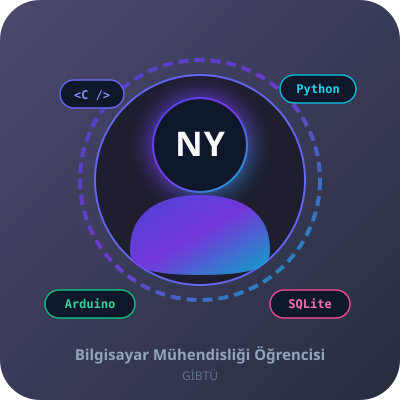

Merhaba, ben Nida Nur Yiğit.
Gaziantep İslam Bilim ve Teknoloji Üniversitesi (GİBTÜ) Bilgisayar Mühendisliği Bölümü 2. sınıf öğrencisiyim. Teorik bilgisayar bilimi temellerini somut, işlevsel ve kullanıcı odaklı projelere dönüştürmeye tutkuyla bağlıyım.
Akademik ve kişisel çalışmalarımda özellikle düşük seviyeli sistem dillerinden C dili ile bellek ve dosya yönetimi algoritmaları kurarken, Python ve C# (Windows Forms) ile veritabanı destekli pratik masaüstü otomasyonları inşa ediyorum. Donanım tarafında ise Arduino Uno, analog/dijital sensörler (MQ-2, MQ-5 gaz dedektörleri, LDR) ve WS2812B Neopixel adreslenebilir LED sürücüleri ile gömülü prototipler geliştiriyorum.
Mühendisliğin teknik boyutunu yaratıcı iletişimle harmanlamaya inanıyorum. Bu doğrultuda YAZEK Dijital Dergi ekibinde Editör & Sayfa Tasarımı sorumlusu olarak bilim, kültür ve teknoloji içeriklerinin görsel düzenleme ve mizanpaj çalışmalarını sürdürüyorum.
Eğitim Geçmişim
Bilgisayar bilimleri yolculuğumdaki temel akademik kilometre taşları.
Lisans: Bilgisayar Mühendisliği
2. sınıf öğrencisi olarak Veri Yapıları ve Algoritmalar, Nesne Yönelimli Programlama, Diferansiyel Denklemler, Mantık Devreleri ve Sayısal Tasarım konularında eğitim almaktayım. Bölüm projelerinde C ve Python dilleriyle aktif problem çözme pratikleri gerçekleştiriyorum.
Ortaöğretim: Fen & Matematik Eğitimi
Analitik düşünme, matematiksel modelleme ve fen bilimleri temeli kazanılarak mühendislik fakültesi bilgisayar mühendisliği programına giriş yapıldı.
Yetkinlikler & Araç Seti
Geliştirdiğim projelerde ve akademik çalışmalarımda kullandığım teknolojiler.
Programlama Dilleri
- C (C99): Bellek yönetimi, göstericiler (pointers), struct mimarileri, binary dosya I/O.
- Python: Nesne yönelimli kodlama, otomasyon scriptleri, Tkinter GUI, SQLite entegrasyonu.
- C#: Windows Forms tabanlı kullanıcı arayüzleri, olay güdümlü (event-driven) geliştirme.
Veri & Algoritmalar
- Veri Yapıları: Bağlı listeler, yığınlar (stacks), kuyruklar (queues), arama ve sıralama algoritmaları.
- SQLite3: Tablo tasarımı, CRUD sorguları, ilişkisel veri bütünlüğü ve yerel depolama.
- Dosya Mimarisi: Verilerin dosya akışlarında (binary/text) kalıcı olarak saklanması.
Gömülü Donanım & IoT
- Arduino Uno: ATmega328P tabanlı mikrodenetleyici kodlama, GPIO, PWM sinyalleri.
- Sensörler: MQ-2 & MQ-5 gaz/yanıcı duman dedektörleri, LDR ışık sensörleri, buzzerlar.
- Aydınlatma & Devre: WS2812B Neopixel adreslenebilir RGB LED'ler, breadboard devre tasarımları.
Web & Dijital Tasarım
- HTML5 & CSS3: Semantik yapı, esnek Flexbox ve CSS Grid düzenleri, responsive mobil tasarım.
- Mizanpaj & Editörlük: Tipografi hiyerarşisi, sayfa kompozisyonu, dergi yayın standartları.
- Versiyon Kontrol: Git temelleri, GitHub depoları ve GitHub Pages yayıncılığı.
YAZEK Dijital Dergi: Editör & Sayfa Tasarımı
Akademik ve teknolojik içeriklerin dijital okuyucuya en etkili, estetik ve okunabilir biçimde ulaştırılmasında aktif sorumluluk alıyorum. YAZEK Dijital Dergi'de üstlendiğim roller şunları içerir:
- ✔ İçerik Editörlüğü: Bilimsel ve teknolojik yazıların imla, akıcılık ve doğruluk yönünden incelenmesi ve yayına hazırlanması.
- ✔ Sayfa Mizanpajı: Grid sistemleri, dengeli sütun düzenleri, tipografi seçimi ve görsel-metin uyumunun kurgulanması.
- ✔ Takım Çalışması & Süreç Yönetimi: Yazarlar, tasarımcılar ve yayın kurulu arasındaki koordinasyonun sürdürülmesi.

İlgi Alanları & Araştırma Konuları
Gelecekte derinleşmeyi ve uzmanlaşmayı hedeflediğim teknoloji başlıkları.